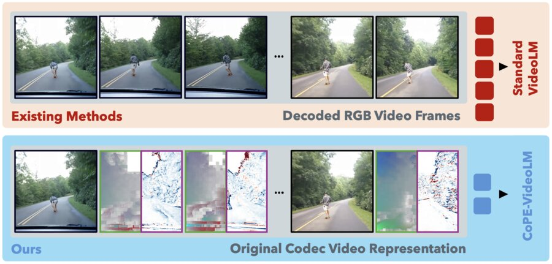
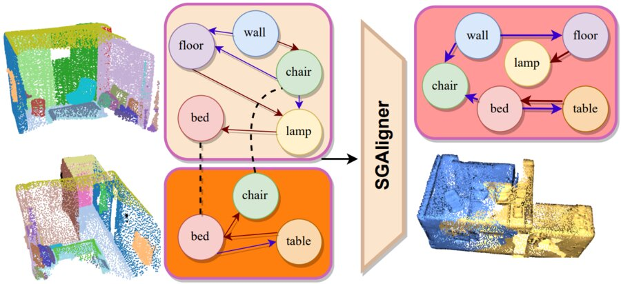
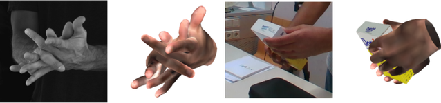
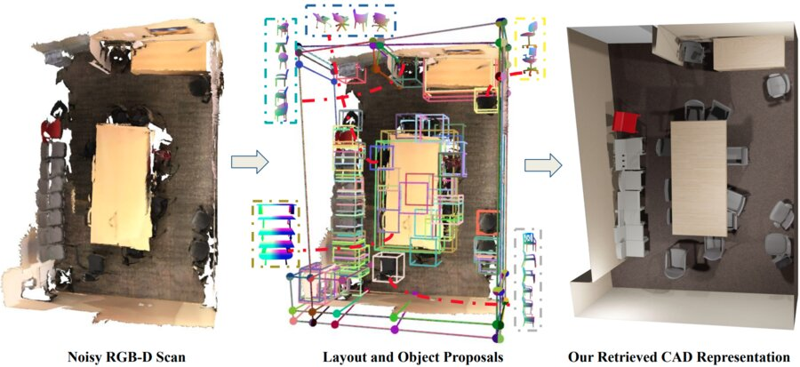

CoPE-VideoLM: Leveraging Codec Primitives for Efficient Video Language Modeling
Uses video codec primitives instead of dense per-frame embeddings, cutting time-to-first-token by up to 86% and tokens by up to 93%.
I am a PhD candidate (2024–) in the Gradient Spaces Group at Stanford University, advised by Prof. Iro Armeni, and part of the Stanford Vision Lab. During my PhD, I have interned at Waymo Perception (Summer ’26), working on streaming temporal reasoning, and at Microsoft Spatial AI Lab (Summer ’25), working on efficient video tokenization. I am partly supported by a Google XR grant on 4D understanding.
My research focuses on spatial intelligence and multimodal video understanding. I build efficient visual representations that capture space and time, align real-world 3D scenes across modalities, and enable controllable built-environment generation.
Before PhD, I received my M.Sc. in Computer Science from ETH Zurich, advised by Prof. Marc Pollefeys, during which I interned at Qualcomm XR working on real-time SLAM. Earlier, I was a computer vision research engineer at Mercedes-Benz R&D and spent a year in Prof. Vincent Lepetit's lab at TU Graz working on hand-object pose estimation.
I joined Waymo Perception (Mountain View) as a research intern, working on streaming temporal reasoning.
Recognized as an Outstanding Reviewer at CVPR 2026. Very proud of this!
Invited talks on “Codec Primitives for Efficient Video Understanding” at Google DeepMind and Valeo AI in Paris.
CoPE-VideoLM is out: efficient codec-aware tokenization for video understanding.
Invited talk on GuideFlow3D at Voxel51 Best of NeurIPS.
GuideFlow3D was accepted to NeurIPS 2025. See you in San Diego!
Invited talks on “Scalable Cross-Modal 3D Scene Understanding” at Google XR Research and Imagine Lab.
I joined Microsoft Spatial AI Lab (Zurich) as a research intern, working on efficient video tokenization.
CrossOver was accepted to CVPR 2025 as a Highlight. See you in Nashville!
Career update I joined Stanford University as a PhD student in Computer Vision.
I joined Qualcomm XR (Amsterdam) as a research intern, working on real-time SLAM for extended reality.
SGAligner was accepted to ICCV 2023. See you in Paris!
I started my MSc in Computer Science at ETH Zurich.
Keypoint Transformer was accepted to CVPR 2022 as an Oral. See you in New Orleans!
I joined Mercedes-Benz R&D as a Computer Vision Research Engineer.
Monte Carlo Scene Search was accepted to CVPR 2021.
General 3D Room Layout from a Single View by Render-and-Compare was accepted to ECCV 2020.
I started as a Research Assistant at IVC, TU Graz with Prof. Vincent Lepetit, supported by a Qualcomm fellowship.
Efficient visual encoders for spatial and video understanding.
Guiding pre-trained generative models to control shape and appearance.
* Equal contribution · † Equal supervision

Uses video codec primitives instead of dense per-frame embeddings, cutting time-to-first-token by up to 86% and tokens by up to 93%.
Training-free 3D generation from geometric primitives, with per-part control over shape adherence and part-specific text or image appearance cues.
A feed-forward model that predicts movable parts and joint parameters of articulated objects from a sparse, unordered set of partial point clouds.
Extends SGAligner with open-vocabulary cues and learned joint embeddings to align 3D scene graphs across modalities, even under low overlap and sensor noise.
Cross-modal alignment method for 3D scenes that learns a modality-agnostic embedding space, enabling scene-level alignment without semantic annotations.

3D Scene Graph Alignment robust to in-the-wild scenarios powering point cloud registration and map integration.

Efficient network for two-hand and object pose estimation in complex interactions, paired with the H2O-3D dataset of two-hand interaction with YCB objects.

Monte-Carlo Tree Search (MCTS) based analysis-by-synthesis method to recover complete scene (3D layout+objects) from a noisy RGB-D scan.

3D layout estimation from a single perspective view, to recover complex non-cuboid layouts by solving a constrained discrete optimization problem.
Get in touch
I’m always open to research collaborations. If you’re around the Bay Area, let’s grab a coffee!